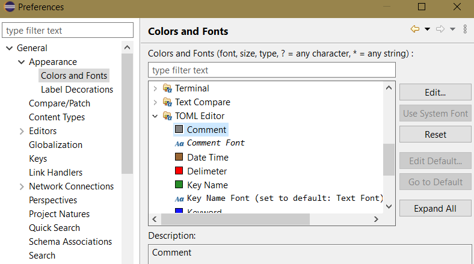
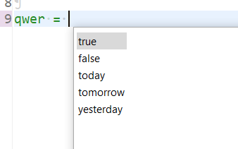
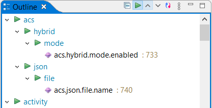
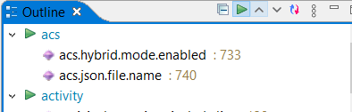
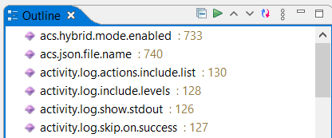
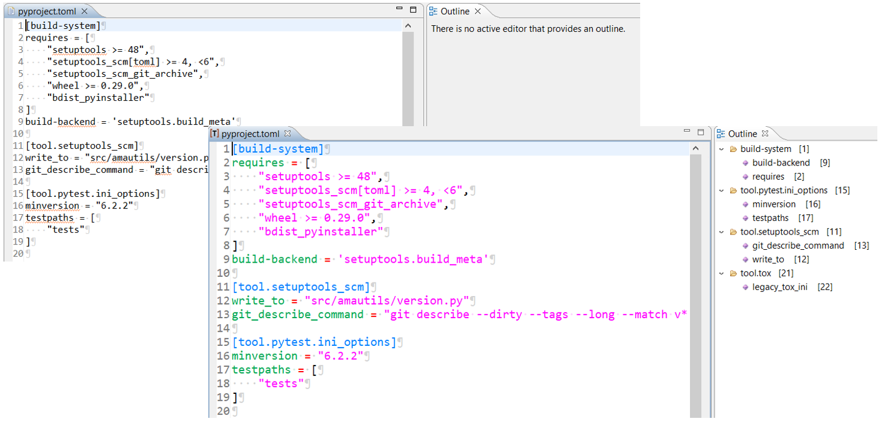
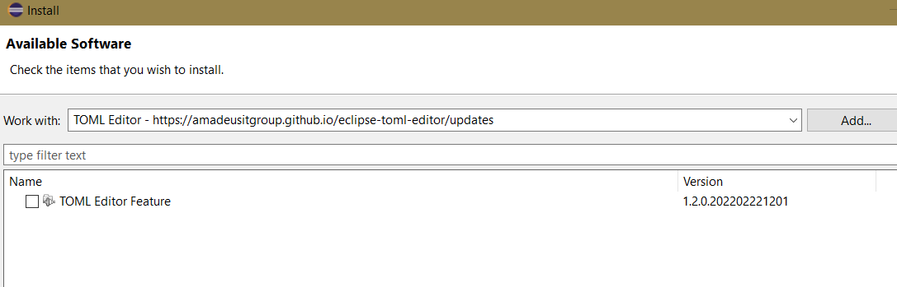

TOML Editor - plugin for Eclipse
TOML is a widely used language for configuration files (for example: Python testing with TOX).
It is supported by plenty of programming languages (Python, C++, etc) and also by plenty of IDEs, but there is not many free of charge plugins for Eclipse.
This editor fills that gap.
Features
- Sections highlighting
TOML names sections: TABLES
- Key-value pair highlighting
- Data types highlighting
- Content assist (simple up to now)
- Colours preferences:
Preferences... -> General -> Appearance -> Colors and Fonts -> TOML Editor
- Outline View support
- Parent-Child level changes in Outline View
More than words...
| Preferences |
 |
| Content Assits |
 |
Outline View
with different levels
|



|
Comparision picture shows main differences: without or with plugin

Installation
- In Eclipse: Help/Install New Software...
- Add site: https://amadeusitgroup.github.io/eclipse-toml-editor/updates
- Install newest version

Contribution
If you have new ideas and want to improve plugin, just fork source code on GitHub and feel free to create :)
Source code: https://github.com/AmadeusITGroup/eclipse-toml-editor
Some TODO items
Here some ideas that could improve plugin and make work yet easier. More one can read in TODO.md file in source code.
- Validation with errors highlighting
- Improved parsing and tokenizing
- Arrays highlighting
- Serialization to JSON
- Configurable comment character
Check TOML details:
https://toml.io/en/v1.0.0